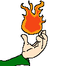
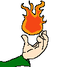
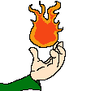
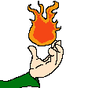

So this is the first post to the blog of my new site. Not gonna lie, this thing is lookin pretty sick. Hopefuly I improve on things over time. I'll start posting about stuff I'm working on like the site, streaming, the game demo thing I'm working on and other stuff. Eventualy I'd like to have a tag system or some way to sort my posts here so I may leave that "Popular posts" card there for now idk.
I stream from time to time, mostly just playing games. I like to mess around with self hosting and tinkering around with my homelab. I used to love making art, but it stopped being fun for me. lately I've gotten back into it a bit in combination with making this websight and poking around with game development.